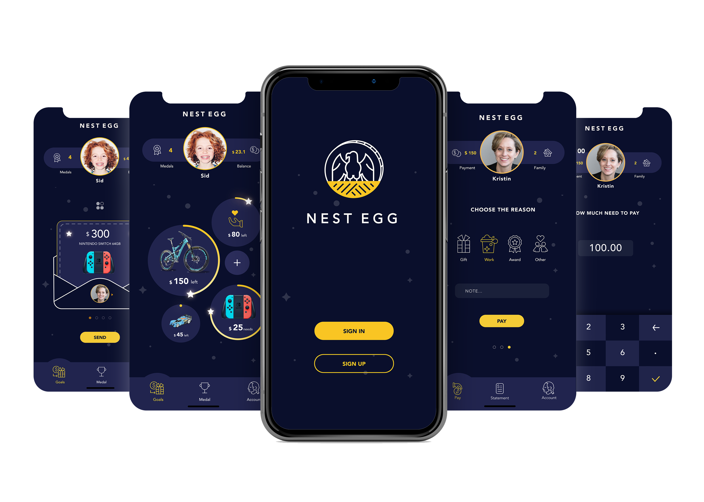
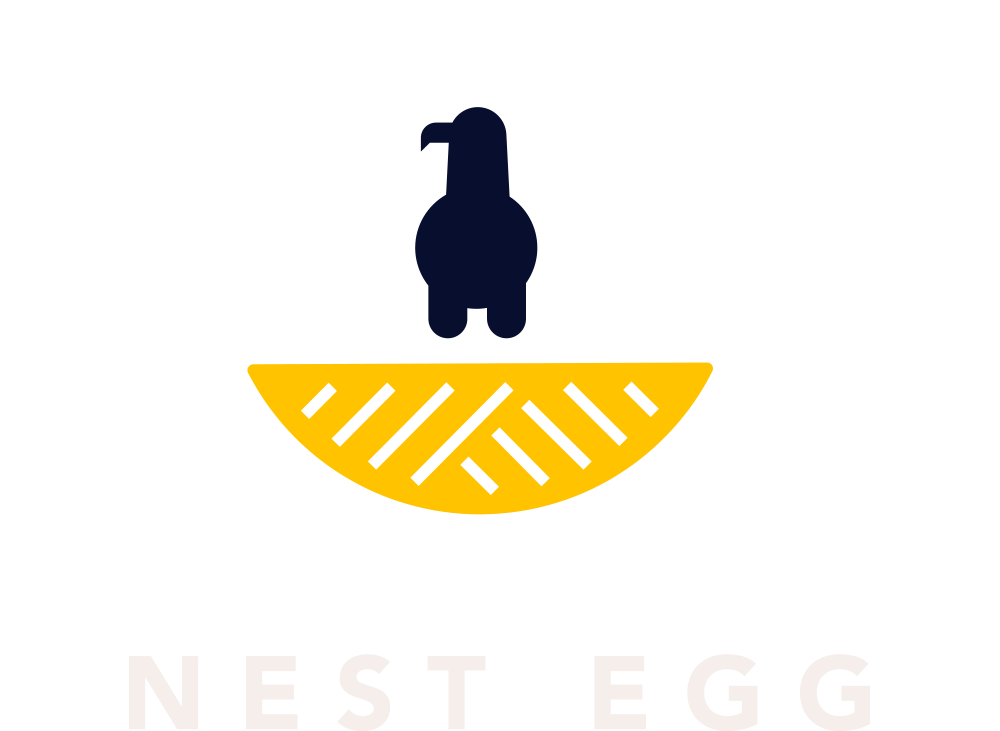
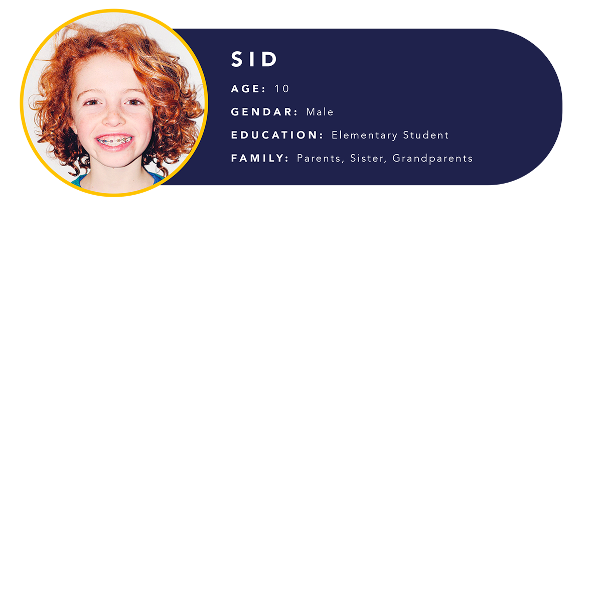
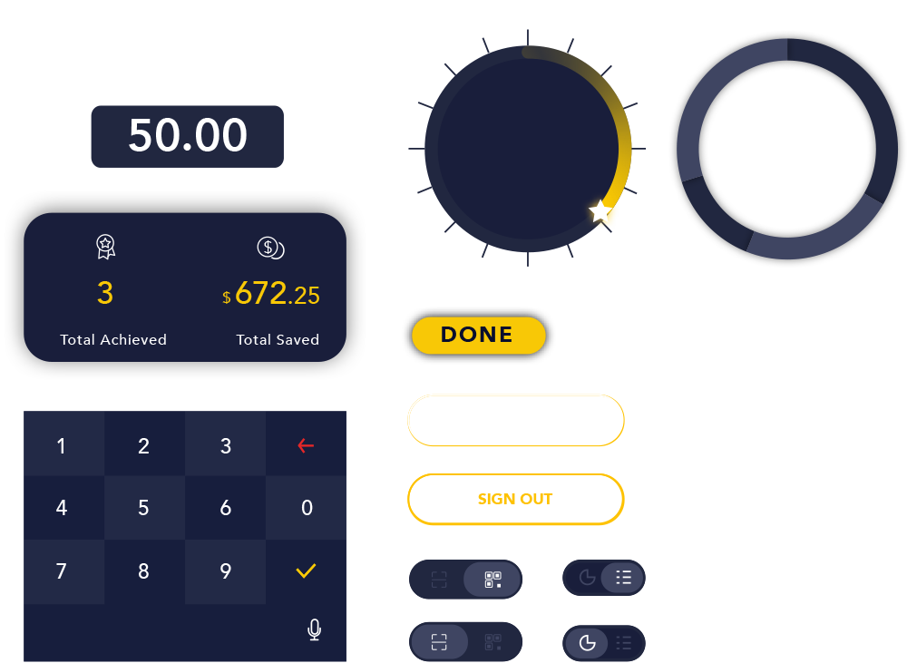

Nest Egg
UX / UI
Nest Egg is a planning mobile application which provides an interesting solution to help children form good money mangagement habits. The child user can set a goal for some money, like buying a toy or giving a donation. Kids can get money by doing chores, getting gifts, or being awarded for some good deed. They will then put this money into a virtual egg jar, to be saved to separated goals they have. Once they save up enough money for a particular goal, they can get the goods online directely or request from family member by sending them the achievement card. With this interesting mechanism, the sense of achievement and responsibility will drive kids to form good money management habits in a delightful way.
Institution: Tyler School of Art
Art Direction: Bryan Satalino

1. Why do I want to design Nest Egg
1.1 Scenario in daily life
Many friends around me actually have some awareness of teaching their children how to use money efficiently. However, sometimes children are easily tempted to break a piggy bank and give up. One of them told me: "Actually, my kid Frida she spends a log of money to buy candies and ice cream. When she hear the music from the ice cream truck, she forgets anything about money management. I bet there is barely any money in that piggy bank now.”
1.2 Finding the problem
It is difficult to help kids form good money management habits because they are distracted by short-term temptations. According to research, 83% of pre-teens have not awareness of money management.
A. It’s hard to start managing money.
“I don’t know how to start it. Just saving it?”
B. Persistence is hard. (Impulse Control)
“I put money in my piggy bank, and take it out to buy candies all the time. There is nothing in the piggy bank now."
C. Children (or pre-teens) have no sense of value of money.
“I want a $34 car toy. I don’t know how long time I can get it if I saving money for them everyday.”
D. Accounting is hard.
“I put in and take off money from my piggy bank. After some time, I don’t know how much money in my piggy now.”
2.3 Solution
Helping people to cultivate habits of managing money in a delightful way.
A. Creating a task is a good start
B. Providing positive incentive to children.
C. Visualize the progress towards the goals (proportion)
D. Easy to check money
2.4 Goal
Let children develop a good habit of saving. Children will live independently in society in the future, and the formation of consumption and savings concepts is indispensable. Parents should cultivate their children’s sense of saving from practice and guide their children to store excess pocket money in their “egg jars” to develop good habits.
2. Audience
2.1 Target Audience
The intelligence of preschool children is enough to understand simple financial concepts, and most children have formed basic financial habits before the age of 12.
2.2 Persona

3. FLOW CHART
3.1 Information Architecture

4. User Testting & Interations
4.1 User Testing
I picked some testers as a child and others as a parent to do the testing.
I deleted some pages, and mix their funciton with another page to make the information architecture simpler and easy to understand. Also I edited some pages' hierarchy to let the children easier to get the information and easy for using.
Also, I get an idea from the testers that the Virtual Egg Jar's have different size, and it depends on the amount of the goal's money. Such as, $100 Egg Jar is larger than $80 Egg jar. Thus, children will intuitive to recognize the amount of money.
5. Design Tile
5.1 Logo Design
Final Look
Logo Sketches
5.2 Color Palette & Typography
5.3 Icon & Component

TOP